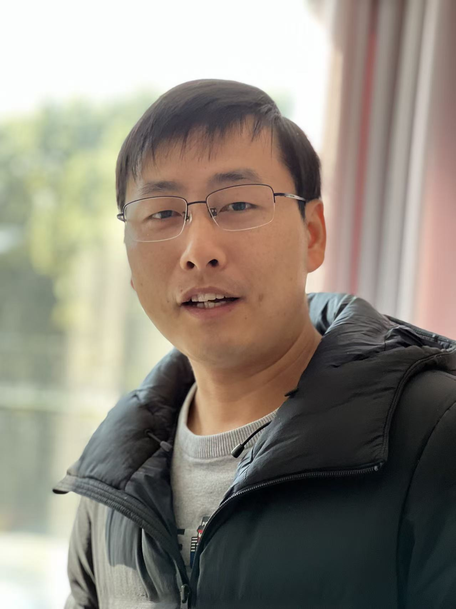

Youtu-LLM
Lightweight, high-performance Large Language Models (2B parameters) for edge deployment.

Expert Researcher & Team Leader
I lead research at Tencent Youtu Lab, exploring large language models, multimodal intelligence, and agentic systems.
My research spans model architecture optimization, native multimodal pre-training, and evaluation of large language models, with a focus on connecting advances in foundation models to practical applications. I led the team to complete native multimodal pre-training for two models: 120B-A7B and 30B-A3B.
My work centers on three core pillars: LLM pre-training and architecture optimization, Agent, and RAG. Through robust, open-source tools and benchmarks, I aim to bridge the gap between foundation models and real-world applications.
I serve as a reviewer for leading conferences, including ICLR, NeurIPS and ACL.
Current research focusMy current work focuses on the training of native multimodal pre-trained models and the exploration of unified model architectures for both understanding and generation.
From foundation models to practical intelligence.
Lightweight, high-performance Large Language Models (2B parameters) for edge deployment.
Open-source Vision-Language models including training recipes and inference code (e.g., Youtu-VL-4B).
One model that parses documents, images, charts, geometry, audio and video into structured JSON.
A next-generation agentic retrieval-augmented generation system built on the “Local Deployment · Autonomous Decision · Memory-Driven” paradigm.
A vertically unified agentic paradigm that jointly connects the entire framework as an intricate integration based on graph schema.
An industry-leading, general-purpose text representation model developed by Tencent Youtu Lab.
Research in language, vision, and agentic systems · 2025–2026
Builds native reasoning and planning into a lightweight language model through staged pre-training and agentic mid-training on synthetic trajectories.
Partitions latent representations and attention inputs across devices to reduce duplicated MLA caches and enable efficient parallel decoding without retraining.
Jointly trains full and sparse attention with bidirectional output alignment, addressing training–inference mismatch and incomplete gradient flow in sparse attention.
Accelerates sparse-attention indexing by first selecting candidate blocks, then refining token selection within them, without requiring additional training.
RetroGen reconstructs and verifies evidence-seeking trajectories from high-quality final artifacts, then trains on successful reconstructions to improve grounded long-form generation.
Combines planning, long-term memory, and context offloading with fine-grained reinforcement learning to improve long-horizon reasoning while keeping working contexts compact.
Automates reasoning prompts with an easy-to-hard curriculum, using solutions to simpler related questions as demonstrations for solving more difficult ones.
Predicts visual tokens alongside language under unified autoregressive supervision, preserving visual detail for both multimodal understanding and vision-centric tasks.
Defines architectural nativity and maps the design space of native multimodal models, covering input–output relationships, data, training, deployment, and evaluation.
Evaluates compositional spatial reasoning through tangram outline prediction and assembly generation, using machine-verifiable expressions and a verifier that supports multiple valid solutions.
Unifies graph construction and retrieval through schema-guided extraction, topology-and-semantics-aware communities, query decomposition, and iterative reflection for complex reasoning.
MeshRAG builds global graph structure from local hash collisions and uses lightweight bitwise retrieval to reduce the cost of graph-based retrieval-augmented generation.
HyperRAG constructs query-specific graphs in hyperbolic space, combining explicit entity links with implicit query-aware connections to adapt knowledge retrieval to each question.
Uses a two-stage reinforcement learning curriculum with pointwise, pairwise, and listwise objectives to improve conditional semantic similarity through finer-grained ranking rewards.
Benchmarks knowledge-conflicting requests and uses representation-space analysis and lightweight editing to help role-playing agents recognize when they should refuse an answer.
Coordinates agents for question decomposition, database schema selection, and SQL refinement to handle complex text-to-SQL tasks over large databases.
Tests whether models can recover multiple facts in the correct temporal or logical order from long contexts, assessing both completeness and sequential consistency.
Automatically generates answerable and unanswerable questions through multi-agent collaboration to evaluate long-context extraction accuracy and reliable recognition of missing answers.
Converts successful agent trajectories into multiple-choice and completion tasks, enabling lightweight evaluation of base models for planning and action during pre-training.
Links reusable mathematical skills to planning, action, and feedback tasks, enabling process-level diagnosis of agentic mathematical reasoning beyond final-answer accuracy.
Research, open source, and ideas worth sharing.